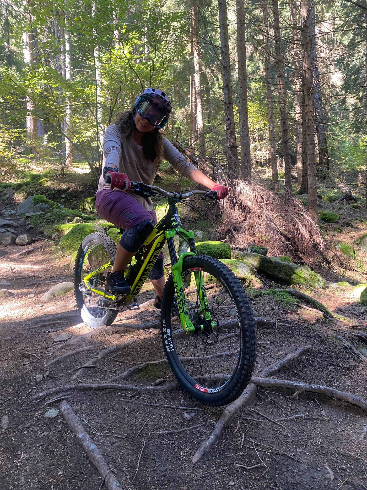

|  |
Vanina BortoniBiomedical Engineer Graduated from the Favaloro'sUniversity (Buenos Aires, Argentina) with more 3 years of experience in handling and repairing medical equipment such as responsible for the technical service and the clinical engineering department within the hospitals in Argentina. |
| 07/2020-06/2022 | Management of preventive and corrective maintenance of medical equipment. |
| 12/2016-06/2020 | Repair medical equipment. |
| Web Development | ★★★★ |
| Comunication | ★★★ |
| Social Media | ★★★★★ |